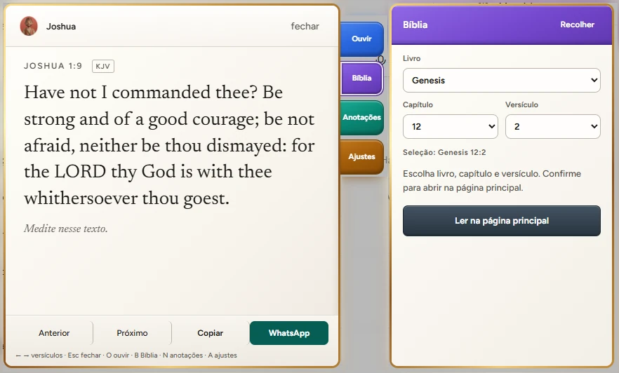

Meditações e versículos
O avatar circular flutua sobre a área de trabalho. Um clique abre a página de meditação com o versículo, a referência e a tradução.
- Avatar F2 e moldura dourada
- Página de meditação
- Anterior e Próximo
Aplicativo cristão para Windows
O Medite acompanha sua rotina no Windows com versículos bíblicos, momentos de reflexão e recursos para a leitura da Palavra, de forma leve e discreta.
Leitura com a voz instalada no Windows.
Ouvir versículoVelocidade: 1,0×
Como funciona
Um pequeno avatar circular com moldura dourada fica sobre a sua área de trabalho. Clique nele e a meditação se abre; seis gavetas levam a Ouvir, Bíblia, Anotações, Presença, Ajustes e Sobre.
Reprodução interativa. As telas abaixo utilizam estilos, dimensões e avatares inspirados no código real do Medite F2 (versão 0.3.0), com textos demonstrativos adaptados para português. Não é uma gravação de tela. Nesta prévia nada é salvo e nenhum lembrete é agendado.
Você também pode usar o Medite livremente: clique no avatar, nas gavetas e nos botões. Atalhos reais funcionam quando a demonstração está em foco: ← → versículos · Esc · O · B · N · A.

Este espaço exibirá uma gravação contínua do Medite F2 instalado no Windows, com capítulos (avatar, meditação, Bíblia, Ouvir, Anotações, Ajustes). O player já está pronto; falta apenas o arquivo de vídeo capturado no computador real.
Recursos
Mostramos com transparência o que já foi testado no Windows e o que ainda está em validação.
O avatar circular flutua sobre a área de trabalho. Um clique abre a página de meditação com o versículo, a referência e a tradução.
Escolha livro, capítulo e versículo na gaveta Bíblia e leia na página principal, com retorno à meditação.
O versículo pode ser lido em voz alta com a voz instalada no próprio Windows, sem internet, em três velocidades.
Registre sua reflexão sobre cada versículo. As anotações ficam somente no seu computador.
Copie o versículo ou envie pelo WhatsApp quando você quiser. Nada é compartilhado automaticamente.
Configure quando o Medite reaparece e desaparece, pause os lembretes e escolha o idioma de leitura. As preferências ficam no seu computador.
Baixar aplicativo
O Medite é gratuito para Windows, em português e inglês, sem cadastro e sem publicidade. A versão 0.3.1 está em preparação para distribuição.
Novidades da versão 0.3.1: versículos aleatórios sem repetição durante cada ciclo, avatar que aguarda a primeira leitura e temporizador que respeita seu tempo de meditação.
Medite para Windows
O instalador ainda não está disponível para download público.
O Medite exige Windows 10 ou 11 de 64 bits. A primeira instalação pode solicitar o Microsoft WebView2. O instalador inicial não terá assinatura digital, e o Windows poderá mostrar um aviso SmartScreen.
Antes de executar, confira o endereço oficial do download e o SHA-256 exibido acima. No PowerShell, use Get-FileHash .\arquivo.exe -Algorithm SHA256, substituindo pelo nome do arquivo baixado. O resultado deve ser idêntico ao informado no site. Não ignore avisos se a origem ou o hash não corresponderem.
Em caso de dúvida, não execute o arquivo e entre em contato com o suporte.
Apoie o Medite
O Medite é gratuito e continuará acessível a todos. Se desejar, você pode contribuir voluntariamente para ajudar em sua manutenção e desenvolvimento.
Os personagens apenas representam cada valor. Todos continuam disponíveis gratuitamente no Medite; nenhuma contribuição desbloqueia recursos.
Valor escolhido: —
Contribuição voluntária. O site não recebe nem armazena dados bancários e não confirma pagamentos; a confirmação acontece somente no aplicativo do seu banco.
Sobre
O Medite nasceu do desejo de lembrar a Palavra de Deus no meio do trabalho, dos estudos e das tarefas do dia. Em vez de mais uma janela disputando sua atenção, ele permanece discreto no canto da tela e se abre quando você quiser parar por um instante.
O aplicativo é e continuará gratuito. Não há assinatura, compras de avatares nem recursos bloqueados. As contribuições, totalmente voluntárias, ajudam a manter o desenvolvimento.
Dúvidas, sugestões ou suporte? Fale com o criador do Medite, John Robert Martins Pereira.